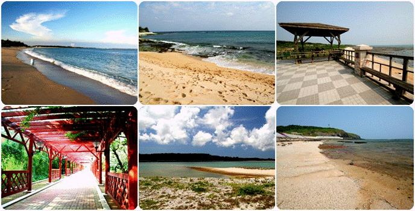

菊島慢活
指導老師:朱晉德

國內首座「傳統聚落保存區」，清道光年間發展成的聚落，
是典型的單姓村。在經過社區總體營造後，
傳統的古厝裡除了保留傳統古厝建築風韻外，
也載入了在地文化特色的各項小型展覽館，
有常民生活館、潮間帶館、社區博物館、
漢藥館、童玩館、褒歌館 等。

對大海的子民而言，海上守護神－媽祖當然是重要的心靈寄託。
澎湖天后宮是台灣最早建立的媽祖廟，列為「國定古蹟」。
早期福建沿海漁民為保佑出海船隻與作業平安順遂，會在船上供奉媽祖以求庇佑
湖常見且知名的海藻，礁膜科的礁膜、俗稱「青海菜」，
每年農曆11月份以後至隔年3月的採收期，準備好長尺棍，
帶著可以排水的簍子，在漲潮的時候由逆水流的方向，
只要單手稍微施力攪動一下，就可以採集到海菜，體驗撈海菜的趣味。
在澎湖地區，夜裡提著漁燈到潮間帶去捕魚的漁作，
澎湖人俗稱「照海」。照閩南語讀如輕聲的「秋」。
為四季不斷的沿海漁撈活動。夏、秋兩季，照海都在上半夜進行；
冬、春兩季則要等到下半夜，才能有適合下海的潮汐。照海可以捕獲的漁穫，
種類相當多，其中最富盛名的就是章魚。
各式貝殼飾品、便宜的澎湖玄武岩、各式進口石頭、
手工手環、老謝自己創作的小藝品。
老謝的店位在馬公市最繁華的中正路上，就在郵局的對面


喵喵喵
連接第二頁 連接第四頁